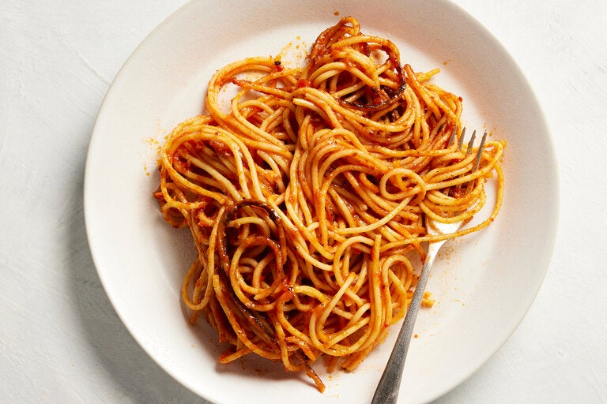

Spaghetti

Description
This is an instant classic! Nothing wrong with good 'ol spaghetti. This is hard to screw up.
Any kind of noodles will do. Any kind of sauce will do. Once again, we're going to cover a multitude of sins with the hot sauce here. We won't behave like total heathens, though. We will cook the pasta appropriately.
Ingredients
- 1 box Noodles
- 1 jar Pasta Sauce
- Salt
- Hot Sauce
Steps
- Bring 4 quarts of water to a boil on the stovetop.
- Salt the water liberally.
- Put noodes in the water and immediately set a timer for 9 minutes.
- When the timer goes off dump the entire contents of the pot into a colander in the sink.
- Dump the jar of sauce into the pot.
- Shake the excess water off the noodes and put then back into the pot with the sauce.
- Stir it up good.